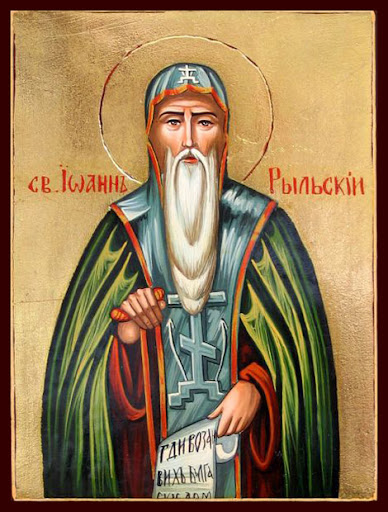

„Hoće li tko za mnom, neka se odreče samoga sebe, neka uzme svoj križ i neka ide za mnom.” (Mt 16,24)

Sveti Ivan Rilski (oko 876. – 946.) najvažniji je bugarski svetac i nacionalni zaštitnik. Nakon mladosti provedene u pastirskoj službi, u 25. godini posvetio se Bogu i zaredio u manastiru sv. Dimitrija. Ubrzo se povukao u gorje Rila, gdje je osnovao znameniti manastir Rila i postao nadaleko poznat kao čudotvorac koji liječi najteže bolesti.
Njegova duhovna snaga i asketski život privukli su pažnju i samog cara Petra I., koji je putovao 500 kilometara kako bi ga susreo. Međutim, ponizni monah odbio je primiti cara, čime je dodatno učvrstio svoj ugled narodnog sveca. Nakon smrti, njegove su relikvije imale burnu povijest; prenošene su u Sofiju, Trnovo, pa čak i u Mađarsku, da bi od 1496. godine trajno ostale u njegovu matičnom manastiru na Rili.
Kult svatog Ivana Rilskog nadilazi granice Bugarske i Balkana. Njegov životopis, koji je u 14. stoljeću sastavio patrijarh Jeftimije, stoljećima je izvor nadahnuća kršćanima. Poseban dokaz njegova univerzalnog značaja jest kapela na Antarktici, izgrađena 2003. godine u bugarskoj polarnoj bazi, koja predstavlja najjužniju pravoslavnu bogomolju na svijetu.